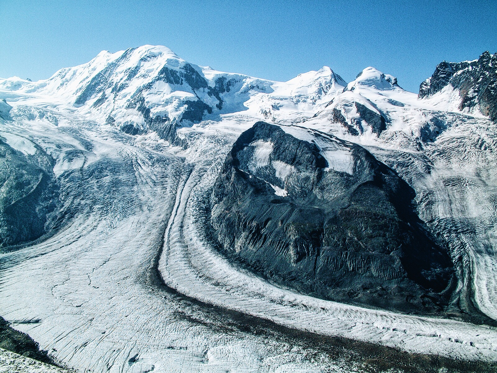
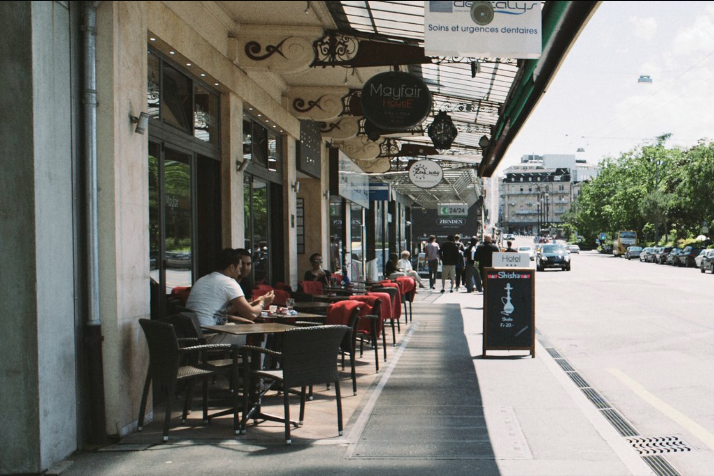
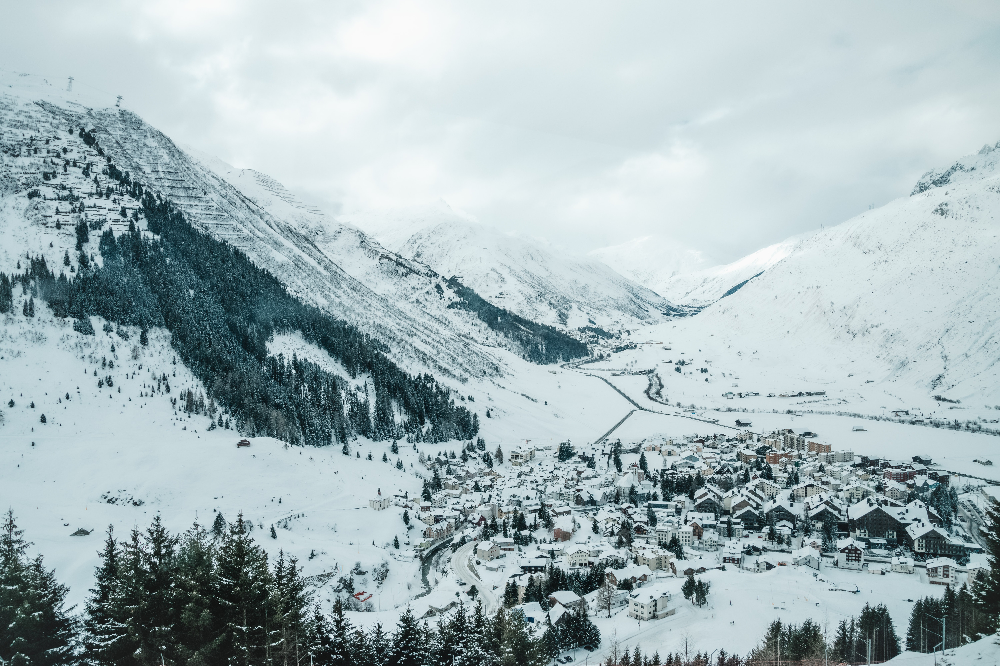

Switzerland
Discover the best of the Swiss Alps
-

Zermatt
Zermatt is synonymous with the Matterhorn that overlooks the village — in the same way, Chamonix and Mont Blanc are eternally linked. Both are the top resort in their respective countries for mountaineering and its heritage.
Gornergrat Glacier Train
Bahnhofplatz
3920 Zermatt
Switzerland
Website -

Montreux
Montreux is nestled between Lake Geneva and the steep, vine-covered terraces of Lavaux. The Vaud Alps rise above the terraces giving Montreux its mild microclimate and 'Swiss Riviera' vibe.
-
Gruyeres
Perched on a hilltop in the Swiss canton of Fribourg is the medieval village of Gruyères — a place that gives its name to the famous Gruyère cheese. Gruyères is encircled with bucolic pastures, some filled with those cheese generating bovines, and has a pleasant order to it common to rural Switzerland.
HR Giger Museum
Rue du Château 2
Château St-Germain
1663 Gruyères
Switzerland
Website -

Andermatt
Andermatt sits in a central part of Switzerland giving it great access to some of the best mountain passes in Europe - the Furka, Susten, Grimsel and Gotthard passes
The Chedi Andermatt
Gotthardstrasse 4
CH-6490 Andermatt
Website -
Zurich
Widder Hotel
Rennweg 7
CH-8001 Zürich, Switzerland
WebsiteLe Corbusier House
Höschgasse 8
8008 Zürich
Switzerland -
Lucerne
Bürgenstock Hotels & Resort
CH-6363 Obbürgen
Website -
Geneva
M.A.D Gallery
Rue Verdaine 11
1204 Geneva
Switzerland
Website -
Vals
7132 Hotel & Spa
Vals
Switzerland
Website -
Grindelwald
Top of Europe
Jungfrau
Grindelwald/Lauterbrunnen